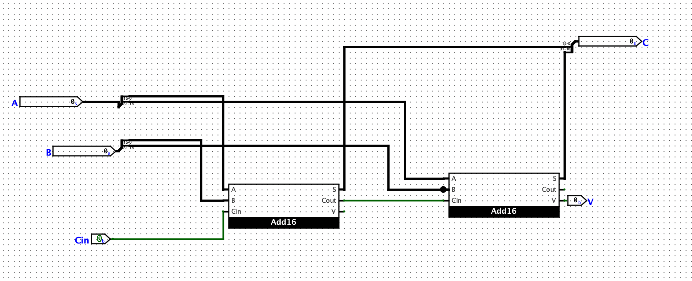
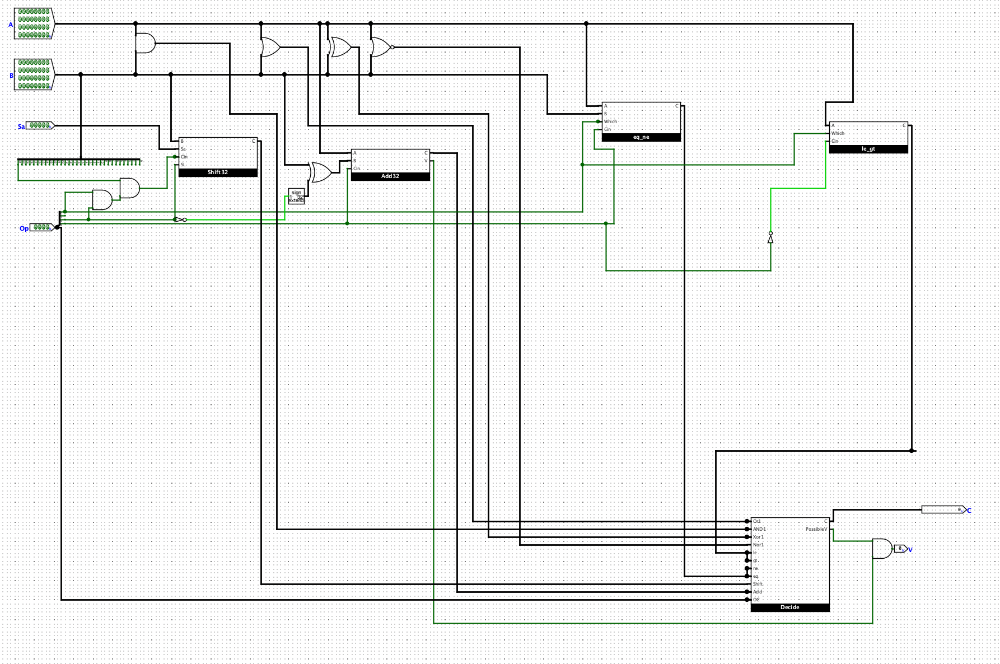
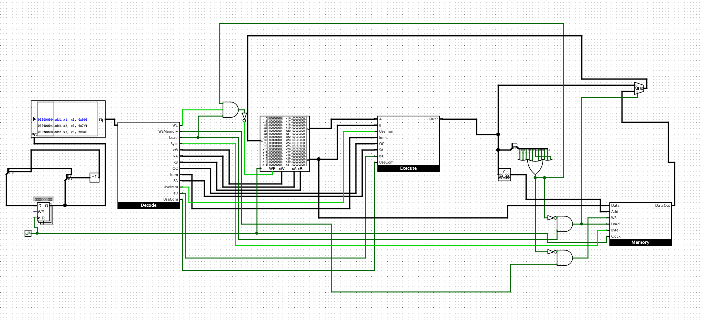

Project Description
This was a major project that I completed for CS3410, which was the development of a RISC-V Processor. I completed this project solo, and the two major parts of the project were the development of the ALU, and the connection of all the abstractions to form the Processor. In the images below, you can see how I constructed the 32-bit adder, the ALU, and the overall Processor. In the end, this Processor was able to mock all of the basic functionality of a real 32-bit RISC-V Processor.
   Back to Home